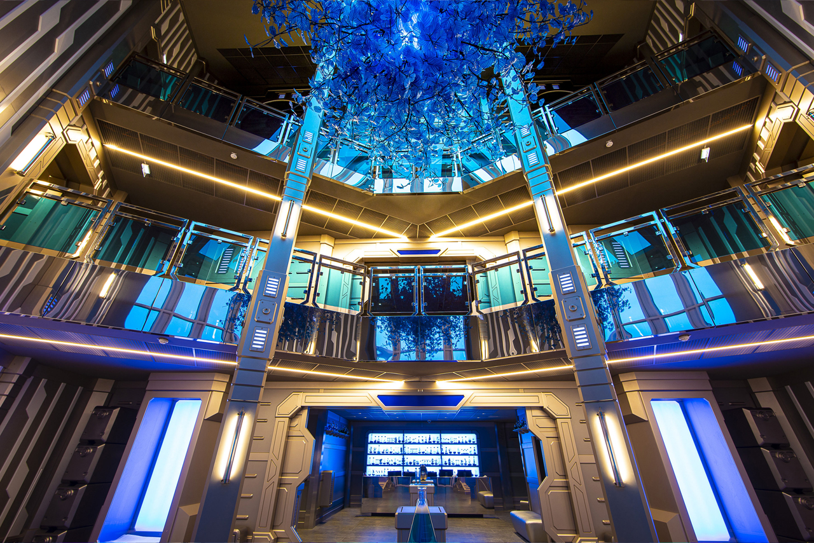
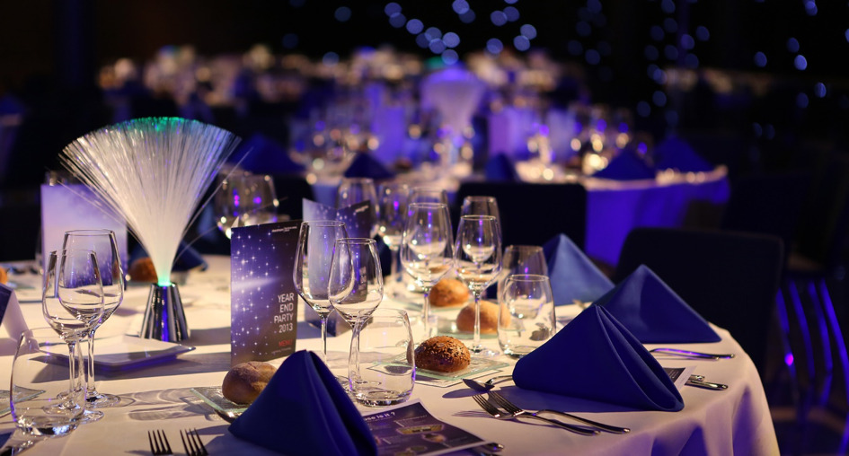

Galaxy Spaceline
Notre établissement offre une vue imprenable sur les galaxies les plus éloignées et les planètes les
plus étranges.
Vous pourrez explorer nos nombreuses installations, dont un spa de relaxation gravitationnelle et une salle
de sport interdimensionnelle.
Notre personnel attentionné est là pour répondre à tous vos besoins, qu'il s'agisse de commander un
repas intergalactique ou de programmer une visite guidée de la nébuleuse locale.
Nous sommes là pour vous assurer que votre séjour soit aussi confortable que possible.
Alors, installez-vous, détendez-vous et préparez-vous pour une aventure incroyable dans notre hôtel
galactique!

Vous vous retrouvez dans nôtre réception galactique.
Bienvenue à bord de notre hôtel galactique, un lieu de détente et d'aventure dans les confins de
l'espace!
Ici, vous pouvez échapper aux contraintes de la vie quotidienne sur Terre et explorer les
merveilles
de l'univers.
Que vous soyez un voyageur interstellaire ou un Terrien cherchant une expérience hors du commun,
nous sommes heureux de vous accueillir dans notre hôtel de luxe.

Vous vous retrouvez dans nos chambres.
Bienvenue dans votre chambre galactique, un lieu de détente et de confort dans l'univers infini qui vous
entoure.
Ces chambres ont été conçues pour offrir une expérience de séjour unique, en combinant des éléments
futuristes et des équipements modernes pour créer une ambiance extraterrestre.
Dès que vous entrez dans la chambre, vous serez transporté dans un autre monde.
Les murs sont recouverts de panneaux holographiques qui changent constamment de couleur pour refléter les
différents phénomènes célestes.
Les fenêtres panoramiques vous offrent une vue imprenable sur les galaxies les plus éloignées et les
nébuleuses les plus colorées.
Les chambres sont équipées d'un lit à gravité variable, qui vous permet de régler la densité pour un sommeil
parfaitement adapté à vos besoins
ainsi qu'un système de contrôle de la température qui ajuste l'atmosphère en fonction de vos
préférences personnelles.
Pour votre divertissement, la chambre est équipée d'un écran interactif qui vous permet de
naviguer dans l'univers à partir de votre lit et également profiter d'une connexion Wi-Fi ultra-rapide pour
rester connecté avec vos amis et
votre famille.
Enfin, pour votre sécurité et votre confort, la chambre est équipée d'un système de contrôle de l'atmosphère
qui maintient une pression et une composition atmosphérique optimales.
Nous espérons que votre séjour dans cette chambre sera une expérience inoubliable et que vous pourrez
profiter pleinement de tout ce que notre hôtel galactique a à offrir.
Nôtre restaurant "L'élégance co(s)mique".
Le restaurant sera décoré avec des couleurs profondes et des lumières tamisées pour créer une atmosphère
élégante et cosmique.
Les murs seront ornés de peintures représentant des scènes de l'espace, des planètes lointaines et des
étoiles étincelantes.
Des bougies flottantes dans des globes de verre ajouteront une touche romantique à l'ambiance.


La proposition de notre restaurant "L'assiette Céleste" est une véritable aventure culinaire qui vous emmène à travers les
différentes saveurs et textures de l'univers.
Nous espérons que cette proposition répondra à vos attentes et que vous apprécierez cette expérience culinaire unique dans l'espace.
N'hésitez pas à nous contacter si vous avez des questions ou des demandes spéciales.